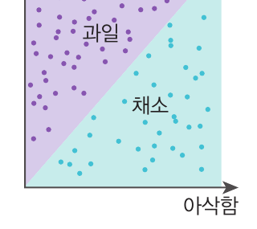
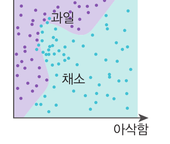
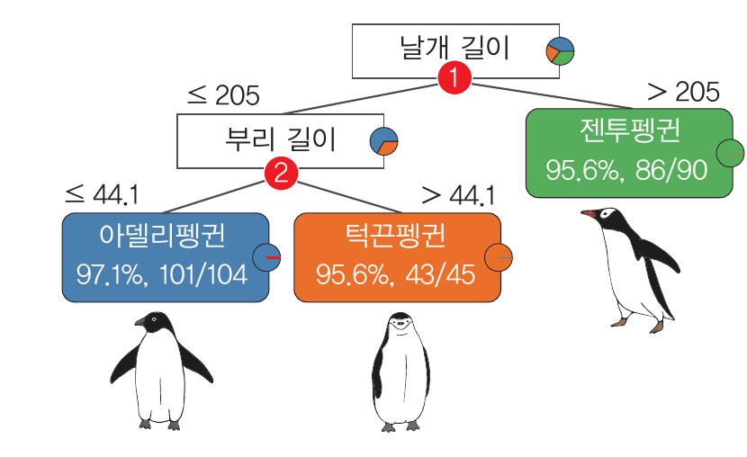
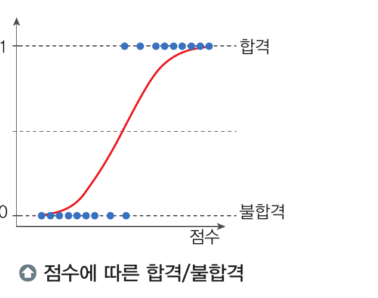
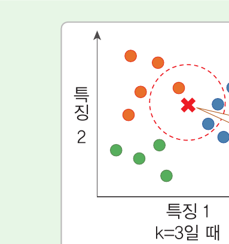
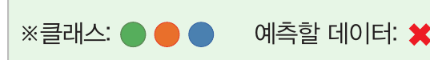
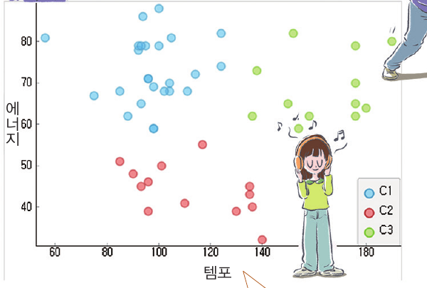

지도 학습
정답 있음입력과 정답의 관계를 학습
정해진 범주 중 하나를 예측
스팸 메일 · 질병 판정의사 결정 트리 · 로지스틱 회귀 · k-NN연속적인 수치를 예측
기온 · 주택 가격 예측선형 회귀01
p.88~91
학습 데이터에 정답이 있는지, 그리고 어떤 방식으로 학습하는지에 따라 나눈다.
입력과 정답의 관계를 학습
정해진 범주 중 하나를 예측
스팸 메일 · 질병 판정의사 결정 트리 · 로지스틱 회귀 · k-NN연속적인 수치를 예측
기온 · 주택 가격 예측선형 회귀데이터 속 구조 · 규칙을 발견
특성이 비슷한 데이터끼리 묶기
고객 유형 나누기k-평균 군집함께 나타나는 항목의 관계 찾기
장바구니 상품 분석데이터 사이의 연관성행동의 결과로 받은 보상을 이용
보상을 최대화하는 행동을 학습
게임인공지능, 로봇제어, 자율주행
02
p.92
문제를 정의하고 데이터를 준비한 뒤, 모델을 만들어 평가하는 반복 과정
해결할 문제와 예측 목표를 정한다.
데이터를 학습 가능한 형태로 준비한다.
알맞은 알고리즘을 선택하여 모델을 학습시킨다.
새로운 데이터에 대한 예측 성능을 확인한다.
03
p.94~95
문제에 맞는 모델을 선정하고 훈련 데이터로 학습한 뒤 테스트 데이터로 평가한다.
모델의 매개 변수 값을 조정하여 데이터에 최적화시키는 과정
과적합훈련 데이터에만 최적화되어 새로운 데이터의 성능이 낮아지는 문제
교차 검증훈련 데이터를 나누어 훈련과 검증을 반복
04
p.96
입력 속성과 예측값 사이의 관계를 가장 잘 나타내는 직선 또는 평면을 찾는다.
독립 변수가 한 개인 경우
독립 변수가 두 개 이상인 경우
05
p.97~98
오차 함수와 결정계수(R²)로 모델의 예측 성능과 설명력을 확인한다.
모델이 데이터를 얼마나 잘 설명하는지를 나타내며, 1에 가까울수록 설명력이 높다.
R² = 0예측력 없음
0.0 < R² < 0.3약한 설명력
0.3 ≤ R² < 0.5중간정도 설명력
0.5 ≤ R² < 0.7높은 설명력
0.7 ≤ R² ≤ 1매우강한 설명력
06
p.106
입력 데이터를 미리 정의된 여러 클래스 중 하나로 할당한다.
| 특징 | 타깃 | |
|---|---|---|
| 당도 | 아삭함 | 식품 |
| 10 | 1 | 과일 |
| 3 | 8 | 채소 |
| 7 | 2 | 과일 |

아삭함과 당도로 과일과 채소를 분류하는 경계는 어디일까?

목표: 클래스 영역의 경계 찾기
07
p.107~108
분류 모델을 만드는 대표적인 세 가지 방법의 판단 원리를 비교한다.

특징의 분할 기준에 따라 데이터를 나누는 과정을 반복한다.
특징값을 기준으로 분할하므로 정규화가 필요 없다.
로지스틱 함수로 각 클래스에 속할 확률을 예측한다.
예: 확률 0.5를 기준으로 합격과 불합격 분류

가장 가까운 k개 데이터의 다수 레이블로 클래스를 정한다.
데이터 사이의 거리는 유클리디언 거리 등을 이용한다.08
p.108
정확도와 혼동 행렬로 예측 결과를 확인한다.
전체 데이터 중 모델이 올바르게 분류한 데이터의 비율
실제 클래스와 예측 클래스를 비교하여 어떤 클래스를 혼동했는지 확인한다.
09
p.118
정답 없이 유사한 데이터끼리 묶어 각 집단의 특징을 파악한다.

기분에 맞는 음악을 찾기 위해 템포와 에너지를 기준으로 음악을 3개 군집으로 나눈다.
주어진 데이터를 k개의 군집으로 묶는다.
1 / 1